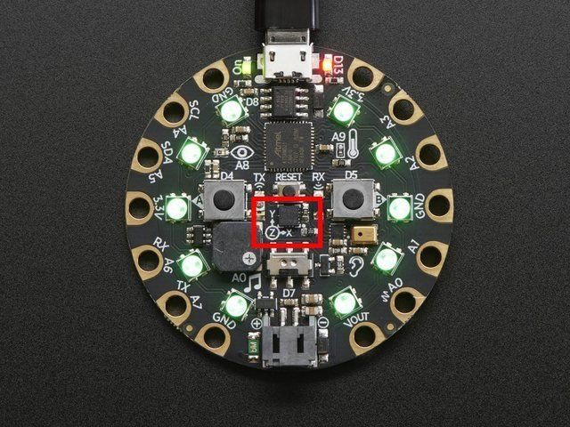

Getting Started
-
Start by lighting up the NeoPixels and importing the cpx.
from adafruit_circuitplayground.express import cpx import board import math cpx.pixels.fill((0, 0, 0)) cpx.pixels.show() -
We will be using the small switch that goes right and left, found on the Circuit Playground Express.
